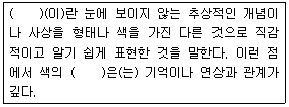
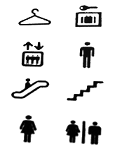
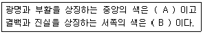

1과목: 색채심리
1. 착시에 대한 설명 중 틀린 것은?
2. 색채의 일반적인 정서적 반응과 색의 3속성 간의 대응이 틀린것은?
3. 색채 정보를 수집하기 위한 방법 중 가장 흔히 적용되는 연구방법은?
4. 청색의 민주화(Blue Civilization)는 어떤 의미인가?
5. 색채와 공감각에서 촉감 및 무게감과 색채의 연결이 틀린 것은?
6. 색채 경험에 대한 설명 중 틀린 것은?
7. 회사 간의 경쟁으로 인해 가격, 광고, 유치경쟁이 치열하게일어나는 제품수명주기단계는?
8. 색채계획의 효과가 아닌 것은?
9. 색의 연상에서 잘못 짝지어진 것은?
10. 대상별 색채선호 유형에 대한 설명 중 틀린 것은?
11. 의미척도법(SD:Semantic Differential Method)의 설명으로 틀린 것은?
12. 동서양의 문화에 따른 색채 정보의 활용이 옳게 연결된 것은?
13. 동서양의 문화적 차이로 인해, 서양에서는 순결함과 고귀함을상징하나 동양에서는 죽음과 연결되어 장례식을 대표하는 색은?
14. 다음 중 색채계획 시 유행색에 가장 민감하게 해야 하는 것은?
15. 보기의 ( )에 공통적으로 들어갈 말은?

16. 색채정보 수집방법으로 가장 용이한 표본조사법의 표본 추출방법이 틀린 것은?
17. 색채의 감정적인 효과 중 가장 화려한 느낌을 주는 색채는?
18. 안전색으로서 빨강의 일반적인 의미는?
19. 색채치료에 대한 설명 중 틀린 것은?(오류 신고가 접수된 문제입니다. 반드시 정답과 해설을 확인하시기 바랍니다.)
20. 색채조절에 있어서 심리효과에 대한 설명 중 틀린 것은?
2과목: 색채디자인
21. 다음 중 디자인사에 나타난 특징으로 틀린 것은?
22. 다음 중 제품디자인을 공예디자인과 구별 짓는 가장 중요한요인은?
23. 패션디자인의 원리에 대한 설명 중 틀린 것은?
24. '아름답게 쓰다'라는 사전적 의미를 가진 표현 기법으로 가독성뿐만 아니라 손 글씨의 자연스러운 조형미를 효과적으로 나타내는 것은?
25. 산업화 과정의 부산물인 생태계 파괴가 인류를 위협하는 상황에서 현대 디자인이 염두에 두어야 할 요소는?
26. 다음 중 동적, 불안정, 강인함의 느낌인 선은?
27. 소비자가 상품을 구매하는 데서 판매 촉진의 효과를 위하여직접 전달 형식으로 이루어지는 광고에 해당되지 않는 것은?
28. 디자인의 원리들로 짝지어진 것은?
29. 모든 조형예술의 최초의 요소로 위치만 있는 조형 요소는?
30. 크리에이티브 제작 부서의 구성원 중 광고제작내용을 사진으로 찍거나 그림으로 그리고, 또는 그래픽으로 가장 강하게 형상화해 내는 사람을 일컫는 것은?
31. 공공시설물 디자인 중 보행시설물에 해당하는 것은?
32. 표현기법 중 완성될 제품에 대한 예상도로서 실물의 형태나 색채 및 재질감을 실물과 같이 충실하게 표현하는것을 의미하는 것은?
33. 레이아웃(Layout)에 대한 설명 중 틀린 것은?
34. 검정, 회색, 녹색의 조합이 대표적인 배색이었으며 주로강렬한 색조와 단순한 디자인을 추구했던 1920년대의디자인 사조는?
35. 다음의 그림과 관련이 있는 것은?

36. 다음 디자인의 조건 중 일정한 목적에 대달하는데 적합한 실용성과 요구되는 기능 충족을 말하는 것은?
37. 1980년대 후반에 확산된 에콜로지(Ecology) 경향으로 유행한색은?
38. 생태학적 디자인 원리와 거리가 먼 것은?
39. 대형 행사장의 색채 계획을 하고자 한다. 컬러를 선정할 때사용하는 컬러 샘플(Color Sample)의 명도나 채도를 실제보다낮추어서 고려하는 것이 바람직하다. 이는 무엇 때문인가?
40. 옥외광고물의 색채설계 시 유의할 사항이 아닌 것은?
3과목: 섹채관리
41. 광택의 평가에 대한 설명 중 옳은 것은?
42. 광원에 대한 설명 중 틀린 것은?
43. 도장하고자 하는 표면에 도막을 형성시켜 안료를 고착시켜주는 역할을 하는 것은?
44. 작은 CMYK 하프톤 점들을 사용하여 세부 이미지를 표현할 수 있으며, 점들의 크기보다는 수를 변화시켜 색조를 표현하므로 출력된 이미지는 질적 저하 없이 생산성을 향상시킬 수 있는 방법은?
45. 물체색은 광원과 조명방식에 따라 변한다. 이와 관련한 설명이 옳은 것은?
46. CCM 시스템을 이용하여, 최소 2개 이상의 기준 광원하에서기준샘플과 동일해 보이는 색을 만들기 위한 색료 조합을예측 하고자 할 때 CCM 시스템에 반드시 포함되어야하는 요소가 아닌 것은?
47. 다음의 용어들을 설명한 것 중 틀린 것은?
48. 디스플레이의 일종으로 자기발광성이 없어 후광이 필요하지만동작 전압이 낮아 소비전력이 적고 휴대용으로 쓰일 수 있어손목시계, 컴퓨터 등에 널리 쓰이고 있는 것은?
49. 육안 조색에 의한 색채 관측 시 갖추어야 할 환경조건에 해당하지 않는 것은?
50. 다음 중 그래픽 카드의 종류에 따라 변하는 요소가 아닌 것은?
51. 다음 중 염료에 대한 설명으로 옳은 것은?
52. 국제 산업표준의 디지털 디바이스 프로파일을 규정하고 관리하는 곳은?
53. 다음 중 측색 결과로 얻게 되는 데이터에 대한 설명으로 틀린것은?
54. 색채의 측정에 관한 설명 중 틀린 것은?
55. 컬러 인덱스(CII : Color Index International)란 무엇인가?
56. 필터식 색채계의 설명이 옳은 것은?
57. 연색성과 관련된 설명이 틀린 것은?
58. 육안 검색 시 주의 사항으로 옳은 것은?
59. 색채의 육안 검색 시 주의해야할 색채 조절의 필수 항목이아닌 것은?
60. 측색의 기하방식 중 적분구 내벽에 빛을 조사하고 광검출기가시료를 향하게 하여 반사율을 측정하는 방식은?
4과목: 색채지각의이해
61. 파장이 동일해도 색의 채도가 높아짐에 따라 색이 달라 보이는 현상(효과)은(는)?
62. 다음 중 색에 대한 설명으로 틀린 것은?
63. 인쇄 과정 중에 원색분판 제판과정에서 시안(Cyan)분해 네거티브 필름을 만들기 위해 사용하는 색 필터는?
64. 다음 중 가법혼색이 아닌 것은?(오류 신고가 접수된 문제입니다. 반드시 정답과 해설을 확인하시기 바랍니다.)
65. 색의 동화현상에 관한 설명 중 옳은 것은?
66. 차가운 색이나 채도가 낮은 색은 뒤로 물러나는 듯한 성격을지니고 있다. 이러한 색을 무엇이라고 하는가?
67. 잔상에 대한 설명으로 옳은 것은?
68. 가법혼색의 설명으로 틀린 것은?
69. 다음 중 채도의 속성으로 구별될 수 있는 색은?
70. 간판 제작 시 글씨를 잘 보이게 할 수 있는 색 활용법으로가장 적합한 것은?
71. 계시대비에 대한 설명으로 옳은 것은?
72. 교통안전 표지판에 주로 활용되는 색의 성질은?
73. 무대 위 흰 벽면에 빨간색 조명과 녹색 조명을 동시에 비추면어떤 색으로 보이는가?
74. 태양빛과 형광등에서 다르게 보이는 물체색이 시간이 지나면서 같은 색으로 느껴지는 것은?
75. 다음 중 전기발광과 관련이 있는 것은?
76. 태양빛을 프리즘에 통과시켰을 때 나타나는 색띠와 관련없는 것은?
77. 빛이 거친 표면에 입사되었을 때 여러 방향으로 흩어져 나가는 현상으로, 맑은 날의 하늘이 더욱 파랗게 보이거나해가 질 때 붉은 노을이 생기는 것을 설명할 수 있는 것은?
78. 색의 진출과 후퇴 효과에 대한 설명으로 옳은 것은?
79. 상의 초점이 맺히는 망막의 부위는?
80. 파란 바탕 위의 노란색 글씨가 더 잘 보이게 하기 위한방법으로 적합하지 않는 것은?
5과목: 색채체계의이해
81. 혼색계의 특징으로 올바른 것은?
82. 다음 중 색채표준의 조건이 아닌 것은?
83. 다음 설명이 ( )에 들어갈 오방색이 옳은 것은?

84. 먼셀의 균형이론 관점에서 볼 때 가장 이상적인 조화로묶인 것은?
85. P.C.C.S(Practical Color Coordinate System) 색체계의구성 특징에 대한 설명으로 가장 올바른 것은?
86. 오스트발트 색체계의 무채색계열을 나타내는 기호를 순서대로(흰색 → 검정) 나열한 것은?
87. 먼셀 기호로 표시할 때 5Y8/10의 설명으로 올바른 것은?
88. Pantone(팬톤) 색표집에 대한 서명 중 틀린 것은?
89. 다음 중 다양한 색표지의 책을 진열하기 위한 책장의 색으로가장 적합한 것은?
90. 오스트발트 색상환의 설명으로 옳은 것은?
91. KS 계통색이름에서 수식형용사와 약호가 바르게 짝지어진 것은?
92. KS 색이름의 설명 중 틀린 것은?
93. 먼셀 색체계에서 N5와 비교한 N2의 상태는?
94. 져드(D. Judd)에 의해 제시된 색채조화의 원리 중, 관찰자에게 익숙한 자연 경관의 색을 선택하여 배색하면조화롭다는 성질을 설명하는 것은?
95. CIE L*a*b*에 대한 설명으로 옳은 것은?
96. NCS 색표가 S7020-R20B의 설명으로 틀린 것은?
97. 수수한 느낌이 가장 잘 표현된 색은?
98. CIE 색체계에 대한 설명 중 틀린 것은?
99. 오스트발트 색채조화론의 기본 개념은?
100. 다음 중 관용색 - 계통색 - 색의 3속성에 의한 표시가 틀린것은?